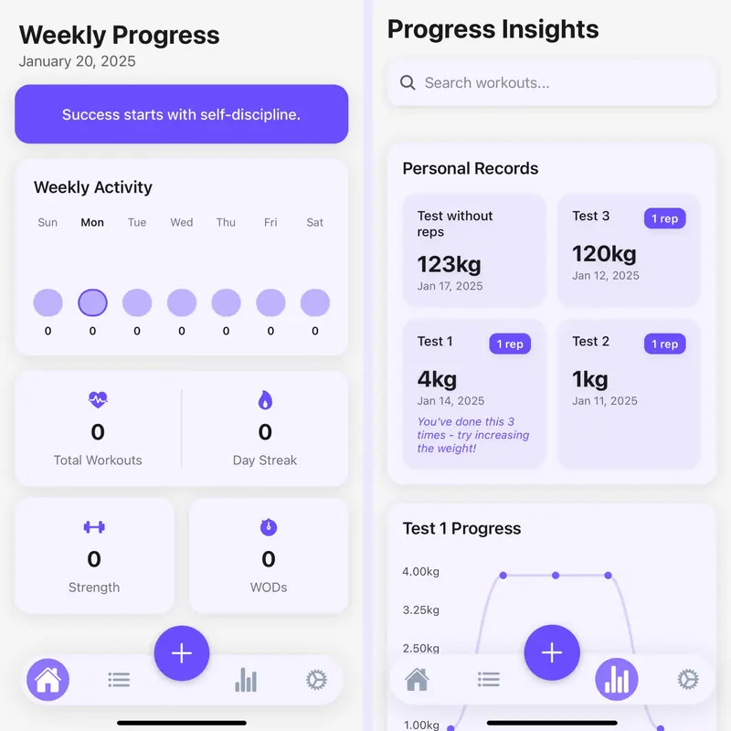

Senior AI Engineer · Alicante, Spain
Unai Garay.
I build agentic RAG systems and production LLM platforms — right now, one that drafts customer SMS behind guardrails, with humans in the loop and evals gating every change.
01 What I do
Retrieval that actually retrieves, guardrails with a human in the loop — and evals that gate every change.
I care about the unglamorous half: evals, guardrails, infrastructure. It’s what decides whether a demo survives contact with real users — and right now it’s most of my job, on an LLM retention platform at Inulti.
Shipping production AI since 2018 · 3 US patent filings · published research at CIARP 2018 (Springer LNCS).
Off the clock: music, bungee jumping, climbing, paddle boarding — and a lot of photography, at @ugmpictures.
Toolbox
- Python
- PyTorch
- Transformers
- RAG
- Agents
- LLM evals
- LLM-as-judge
- NLP
- Voice · LiveKit
- FastAPI
- Docker
- AWS
- ClickHouse
- GCP
- Airflow
- TypeScript / React
02 Experience, 2018 to now
Where I’ve shipped.
Start
2018 to now, in five stops.
Scroll to take the road, or jump straight to a stop.
-
to now
Inulti Now
Senior AI Engineer
An LLM retention platform on AWS, end to end: AI-drafted SMS replies behind safety guardrails with human-in-the-loop review, a CRM over ClickHouse, and LLM-as-judge and synthetic-call eval harnesses gating every prompt and model change. Also: real-time voice agents on LiveKit + SIP.
-
to
Tekever
Senior LLM Engineer / Data Scientist
A pipeline that turns Signal chats into Jira tickets: semantic and temporal clustering, then LLM-written structured tickets, on Airflow and GCP.
-
to 2025
Sorcero
Senior AI Engineer
Led AI R&D for an NLU platform over unstructured medical data — theme tagging, NER, summarization, recommendation and a custom neural search engine with RAG and agents. The work behind the three patents.
-
to
Accenture
Data Scientist
NLP and topic modelling over ticketing data to speed up resolution; skills-inference tagging for employee selection.
-
to
Smartloto
AI Engineer
Deep-learning image validation for lottery tickets on GCP, with on-device inference on Android and iOS.
Education MSc Artificial Intelligence, Valencian International University (2018–19) · BSc Computer Science, University of Alicante (2014–18) · Erasmus year in Athlone, Ireland (2016–17).
The full story: CV (PDF)03 Side projects
Made on the side.
-
No. 01
Guexit
A multiplayer guessing game played with AI-generated cards.
Transformers · Angular · .NET
-
No. 02
Neural Search
Semantic document search that reads meaning, not keywords.
Haystack · Transformers · Streamlit
-
No. 03
Grocery Classifier
Recognises grocery products and retrains itself in seconds.
PyTorch · computer vision
-

No. 04
Marca Tu Ritmo
A cross-platform workout tracker.
React Native · Expo · TypeScript
04 Research & patents
On paper.
05 Contact
Say hi.
Let’s build something that ships.
unaigaraymaestreClickTap the address to copy it · open in mail app · Gmail